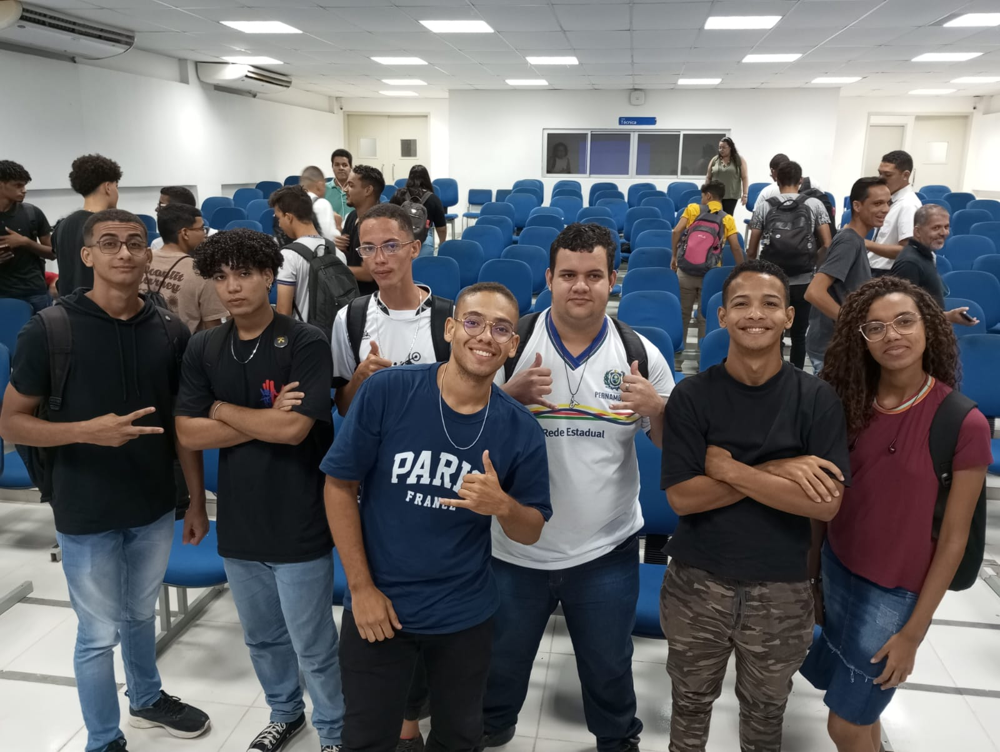
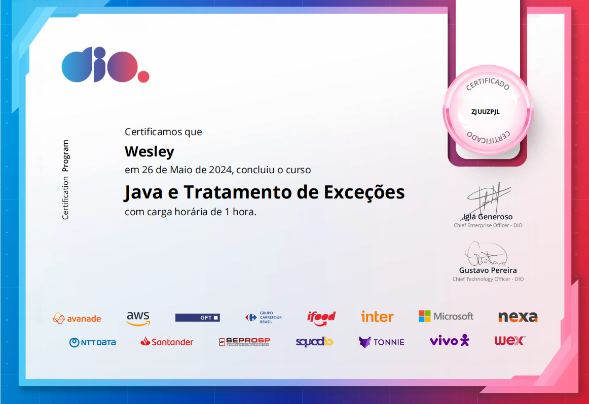
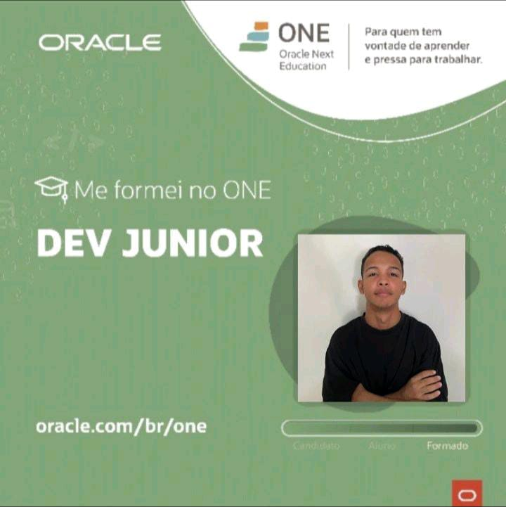
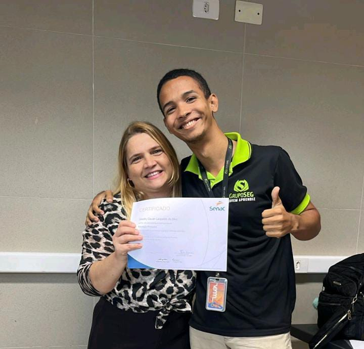
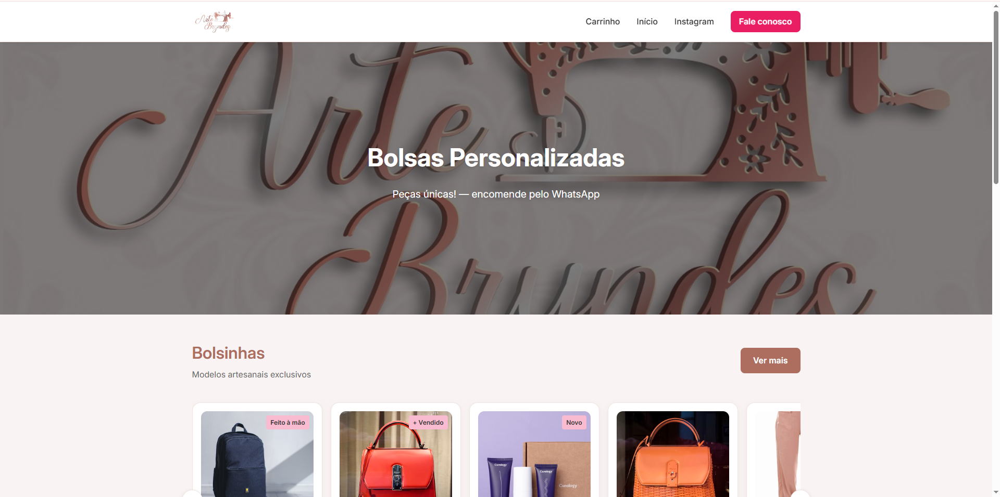
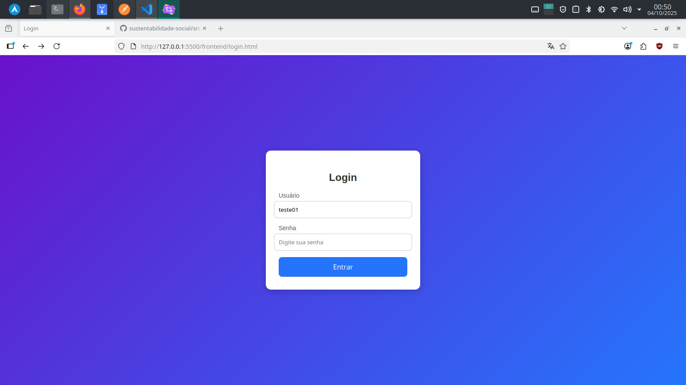
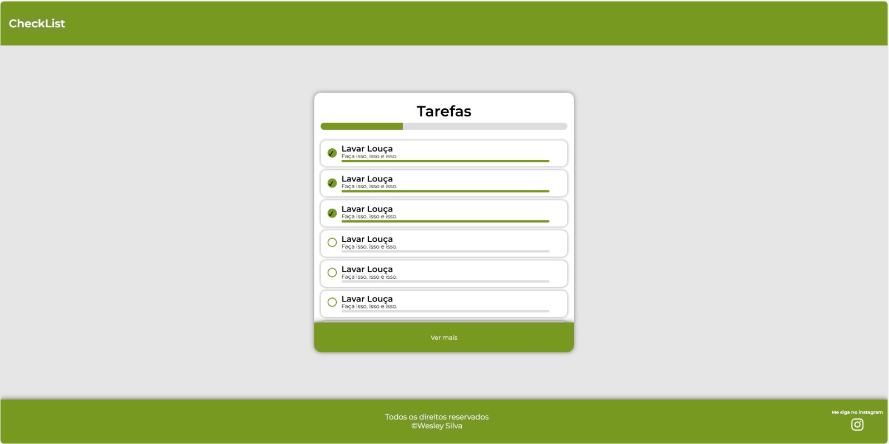
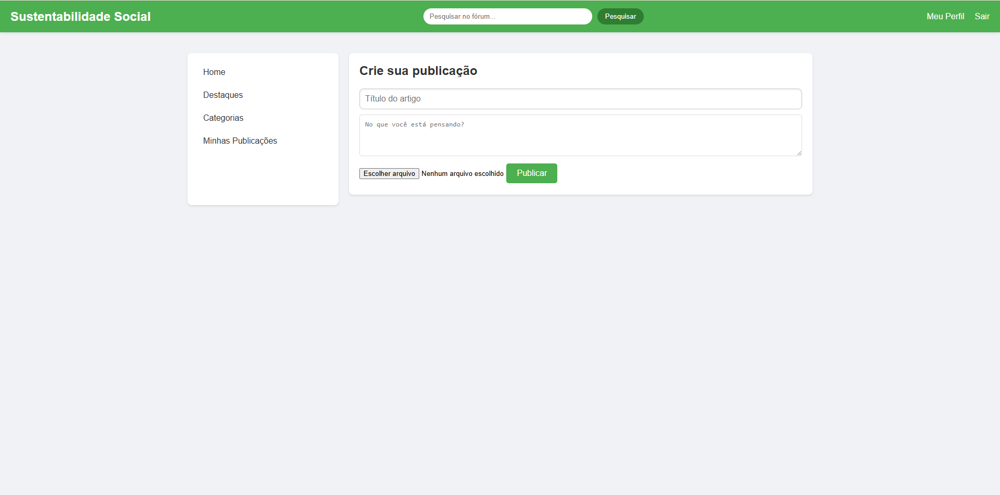
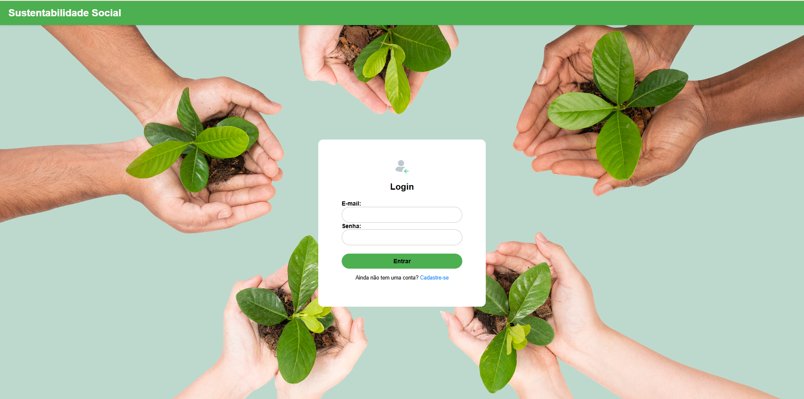
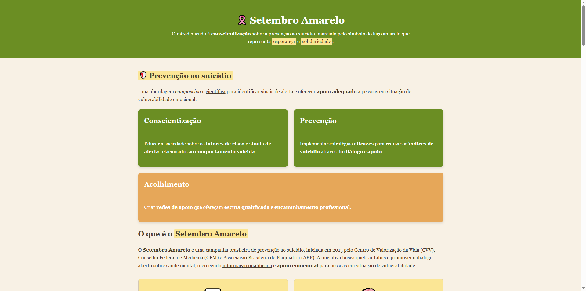

MINHAS HARDSKILLS
BACKEND COM JAVA:
- SpringBoot Framework
- Spring DataJpa
- H2 Database
- Flyaway Migration
- Spring Security
- APIs RestFull
- Bancos de Dados Relacionais
FRONTEND:
- HTML5 & CSS3
- JavaScript (ES6+)
- UX / UI Design
- Figma Prototyping
- ReactJS
- React Native
CYBERSECURITY & TOOLS:
ACADÊMICO

ETE ADVOGADO JOSÉ DAVID GIL RODRIGUES
05/02/2024
Início da minha trajetória acadêmica e profissional na área de tecnologia, na qual fui aprovado no processo seletivo em primeiro lugar. Desde então, desenvolvo uma base sólida em sistemas e infraestrutura.
Atualmente, direciono minha carreira de forma incisiva para a cibersegurança e engenharia de software. O estudo contínuo de vulnerabilidades, arquitetura de redes e desenvolvimento seguro me capacita a projetar sistemas não apenas funcionais, mas protegidos contra as ameaças do cenário digital moderno.
DIGITAL INNOVATION ONE (DIO)
01/04/2024
Especialização focada no desenvolvimento Backend utilizando Java. Aprofundamento em conceitos de tipagem forte e orientação a objetos para criar arquiteturas de software escaláveis, sustentáveis e resilientes a falhas.
A trilha incluiu conhecimentos complementares em Python e JavaScript, enfatizando a importância crítica dos testes unitários (TDD) para assegurar a integridade do código e mitigar potenciais vulnerabilidades exploráveis nas aplicações.


ORACLE NEXT EDUCATION - ONE
19/08/2024
Formação intensiva financiada pela Oracle em parceria com a Alura. O programa abordou as melhores práticas do mercado corporativo, consolidando minhas habilidades essenciais em desenvolvimento de software e infraestrutura.
Além da proficiência em stacks Frontend e Backend, o curso reforçou a vivência prática com o ecossistema Linux. A administração de servidores, o manuseio avançado de terminais e a aplicação ágil do conhecimento constituem hoje a espinha dorsal de minha metodologia de trabalho.
SERASA EXPERIAN - SENAC
20/05/2025
Formação como Programador de Sistemas pelo Senac, integrado ao renomado programa da Serasa Experian. Um treinamento de alto nível técnico voltado para os rigorosos padrões do mercado financeiro e de proteção de dados.
Orientado por engenheiros de software seniores, o foco metodológico é a excelência: escrever código performático, realizar análises rigorosas de segurança (Secure Coding) e estar plenamente engajado no modelo de produção de grandes empresas de tecnologia.

Projetos
Olhe meus projetos





